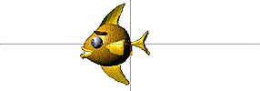
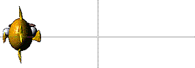
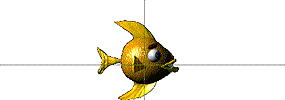

Using Director > Vector Shapes and Bitmaps > Changing registration points
Using Director > Vector Shapes and Bitmaps > Changing registration points |
Changing registration points
A registration point is a marker that appears on a sprite when you select it with your mouse. (Registration points do not appear on unselected sprites or when a movie is playing.) Registration points provide a fixed reference point within an image, thereby helping you align sprites and control them from Lingo. Registration points are crucial to precisely placing vector shapes, bitmaps, and all cast members that appear on the Stage.
By default, Director assigns a registration point in the center of all bitmaps, but for many types of animation, you may want to move the registration point. To do this, you can use the Registration Point tool.
You can edit a bitmap's registration point in the Paint window or using Lingo.
Moving the registration point is useful for preparing a series of images for animation. When you use Cast to Time or exchange cast members, Director places a new cast member's registration point precisely where the previous one was. By placing the registration point in the different locations, you can make a series of images move around a fixed position without having to manually place the sprites on the Stage. Use onion skinning to set registration points when images are placed in relation to each other. See Using onion skinning.



With the registration points set as shown, the series of fish swim in a circle without any tweening or manual placement of sprites.
To set a registration point:
1 |
Display the cast member you want to change in the Paint window. |
2 |
Click the Registration Point tool.
|
The dotted lines in the Paint window intersect at the registration point. The default registration point is the center of the cast member. |
|
The pointer changes to a cross hair when you move it to the Paint window. |
|
3 |
Click a location in the Paint window to set the registration point. |
You can also drag the dotted lines around the window to reposition the registration point. |
|
Note: To reset the default registration point at the center of the cast member, double-click the Registration Point tool.
To set a bitmap's registration point with Lingo:
Set the regPoint cast member property. Set the centerRegPoint property to specify whether Director automatically centers the registration point if the bitmap is edited. See centerRegPoint and regPoint.